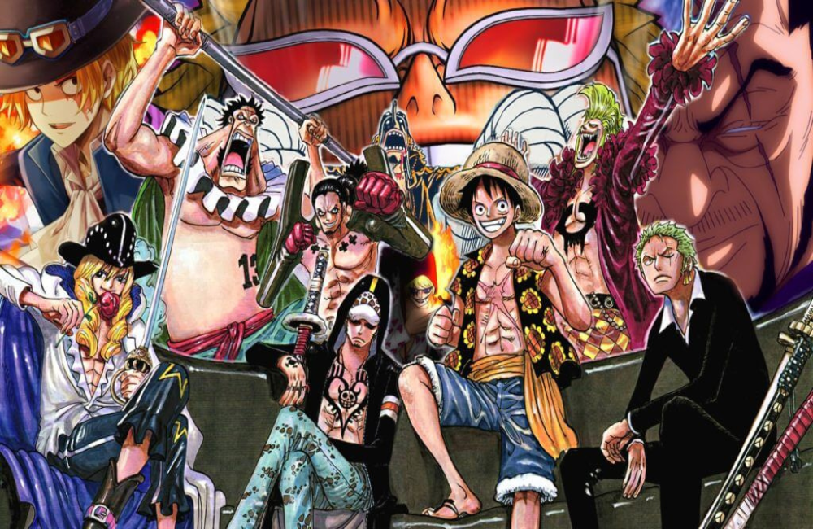
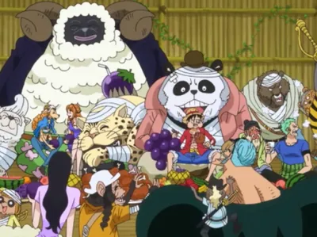

11.30.15_f8aad35c-fotor-bg-remover-2025080722435.png)
 21.12.37_3fee6671-fotor-bg-remover-20250807224216.png)


Eiichiro Oda
One Piece é um anime e mangá japonês que conta a história de Monkey D. Luffy, um jovem que sonha em
se tornar o Rei dos Piratas.
Para alcançar seu objetivo, ele forma a tripulação dos Piratas do Chapéu de Palha e embarca em uma
aventura em busca do lendário tesouro conhecido como "One Piece", que está escondido na ilha final
da Grand Line, Laugh Tale.
Lista de Episódios
- - Arco do Romance Dawn
- - Arco da Vila Laranja
- - Arco da Vila Syrup
- - Arco do Baratie
- - Arco de Arlong Park
- - Arco dos Piratas de Buggy
- - Arco de Loguetown
- - Arco do Dragão Milenar (filler)
- - Arco da Reverse Mountain
- - Arco de Whiskey Peak
- - Arco de Coby e Helmeppo
- - Arco de Little Garden
- - Arco da Ilha de Drum
- - Arco de Alabasta
- - Arco Pós-Alabasta (filler)
- - Arco da Ilha dos Carneiros (filler)
- - Arco da Névoa Arco-Íris (filler)
- - Arco da Ilha de Jaya
- - Arco de Skypiea
- - Arco do G-8 (filler)
- - Arco de Long Ring Long Land
- - Arco do Sonho do Oceano (filler)
- - Arco do Retorno do Foxy (filler)
- - Arco do Almirante Aokiji
- - Arco de Water 7
- - Arco de Enies Lobby
- - Arco Pós-Enies Lobby
- - Arco de Ice Hunter (filler)
- - Arco de Thriller Bark
- - Arco da Ilha Spa (filler)
- - Arco do Duval da Máscara de Ferro
- - Arco do Arquipélago de Sabaody
- - Arco de Amazon Lily
- - Arco do Paradeiro dos Chapéus de Palha
- - Arco de Impel Down
- - Arco da Retrospectiva Pré-Marineford
- - Arco de Marineford
- - Arco do Reino de Goa (flashback)
- - Arco Pós-Marineford
- - Arco do Retorno a Sabaody
- - Arco do Fundo do Oceano
- - Arco da Ilha dos Homens-Peixe
- - Arco da Ambição de Z (filler)
- - Arco de Punk Hazard
- - Arco do Resgate de Caesar (filler)
- - Arco de Dressrosa
- - Arco de Silver Mine (filler)
- - Arco de Zou
- - Arco da Marinha Supernova (filler)
- - Arco da Ilha de Whole Cake
- - Arco de Reverie
- - Arco do País de Wano
- - Arco de Egghead
- - Arco de Egghead
Saga de East Blue

Saga de Alabasta

Saga de Skypiea (Ilha do Céu)

Saga de Water 7

Saga de Thriller Bark

Saga da Guerra dos Maiorais de Marineford

Saga da Ilha dos Homens-Peixe

Saga de Punk Hazard

Saga de Dressrosa

Saga de Zou

Saga de Whole Cake

Saga do País de Wano

Saga Final